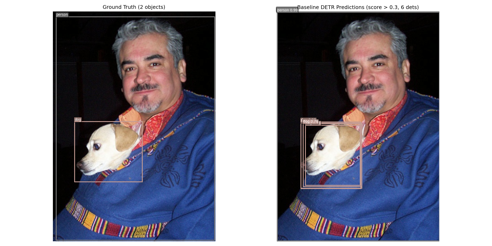
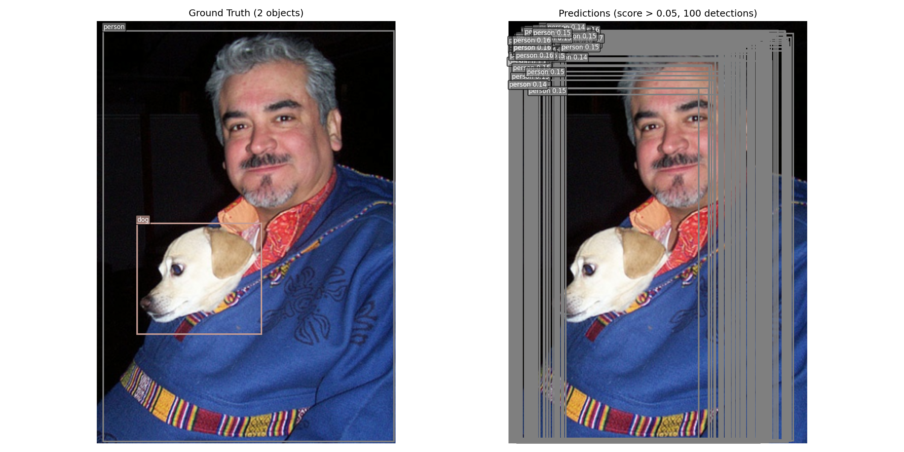
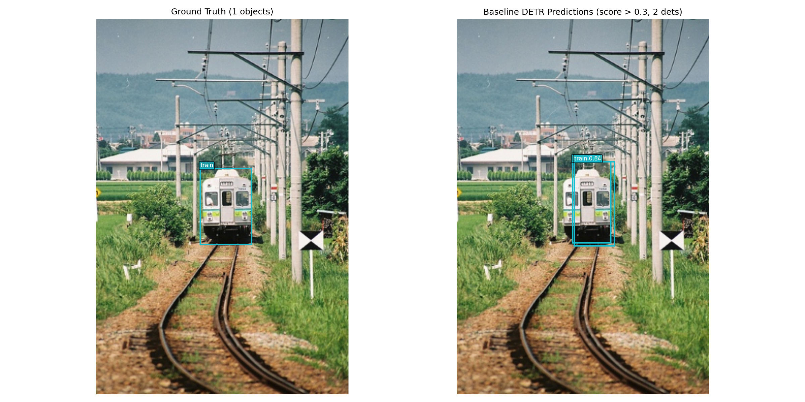
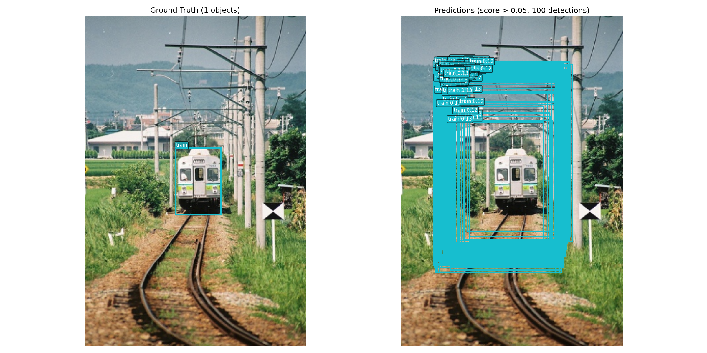
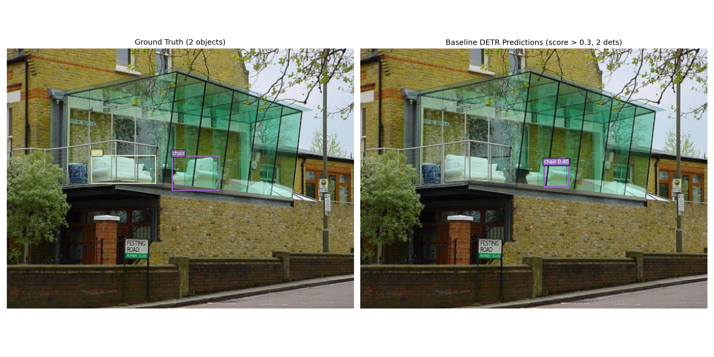
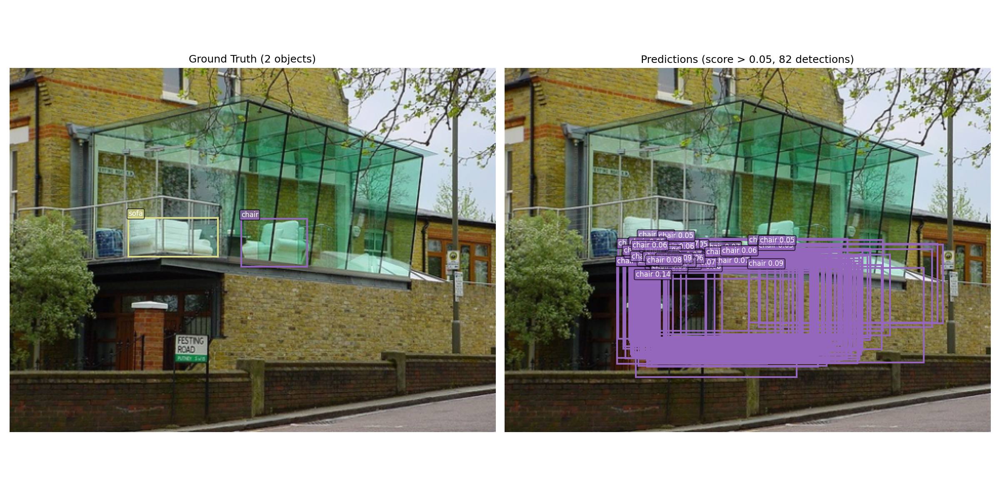
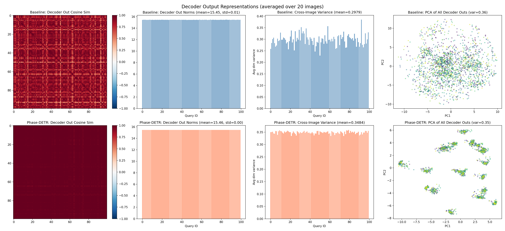

Why Phase DETR fails to converge on PASCAL VOC
From classification success (68.20%) to detection failure (6.76% mAP) — diagnosis and next steps
Phase ViT v2 beats Patch ViT on CIFAR-100: 68.20% vs 63.80%
Phase DETR on VOC: 6.76% mAP vs DETR baseline 56.39%
Without ImageNet-scale pretraining, no model converges — even standard DETR gets only 4.15%
Dilated backbone + neighborhood aggregation solved the receptive field gap
| Model | CIFAR-100 | Delta |
|---|---|---|
| Patch ViT baseline | 63.80% | — |
| Phase ViT v1 (point) | 60.56% | -3.24 |
| Phase ViT v2 (dilated+neigh) | 68.20% | +4.40 |
Content-adaptive tokenization works for classification. Natural next step: apply to object detection.
Phase ViT selects semantically important positions — ideal for detection where objects matter
DETR uses transformer encoder on tokens — drop-in replacement for backbone features
Fewer tokens (256 vs grid) → faster attention, potentially better focus
Replace ResNet backbone + grid tokens with Phase-Selective tokenization
PASCAL VOC, 150 epochs, 4 GPUs, 512×512 input, batch 32
| Model | Pretrain | Params | mAP@0.5 |
|---|---|---|---|
| DETR (ResNet-50) | ImageNet-1K | 41.6M | 56.39% |
| DETR (ResNet-50) | None | 41.6M | 4.15% |
| Phase DETR | CIFAR-10 | 22.3M | 3.58% |
| Phase DETR | None | 22.3M | 6.76% |
Critical finding: Without ImageNet pretraining, even standard DETR fails (4.15%). Phase DETR's CIFAR-10 pretrain actually hurts (3.58% < 6.76%).
Takeaway: Pretraining quality is the dominant factor. Architecture alone is not the bottleneck.
Same images — DETR (ImageNet pretrain, 56.39% mAP) vs Phase DETR (no pretrain, 6.76% mAP)
DETR Baseline

Phase DETR

DETR Baseline

Phase DETR

DETR Baseline

Phase DETR

Baseline: precise, well-localized boxes. Phase DETR: overlapping, clustered boxes with no accurate localization — queries fail to specialize.
Phase DETR's 100 object queries predict heavily overlapping boxes instead of diverse spatial coverage

Problem: Queries collapse to similar box predictions — no spatial diversity. Without strong encoder features, the decoder cannot learn to differentiate object queries across different spatial regions.
Root cause: Weak backbone features → uninformative encoder memory → decoder queries all attend to the same noisy signals → clustered, redundant predictions.
LaViDa replaces autoregressive decoding with discrete diffusion — denoises all tokens simultaneously via iterative refinement
Key observation: Diffusion denoises "eyes" and "couch" at different steps in any order — but the visual tokens are always the same 980 fixed patches. The vision encoder does not adapt to what the LM is currently trying to reconstruct.
As more text is denoised, Phase ViT progressively selects more visual tokens to ground the increasing text content
Key idea: As diffusion reveals more text, the Phase tokenizer progressively selects more visual tokens — starting with a few tokens for initial context, growing to full coverage as the description becomes richer. This helps the model focus on relevant visual regions when reasoning about them.
Each denoised text token becomes conditioning for a T2I diffusion model — text and image co-generated progressively
Dual diffusion: Text diffusion progressively denoises words → each partial text conditions a T2I model to generate image content. Phase tokenizer selects relevant regions from the original image, and the loss is computed between the generated regions and the corresponding selected regions of the original — supervising the T2I model to reconstruct what the Phase tokenizer focuses on.